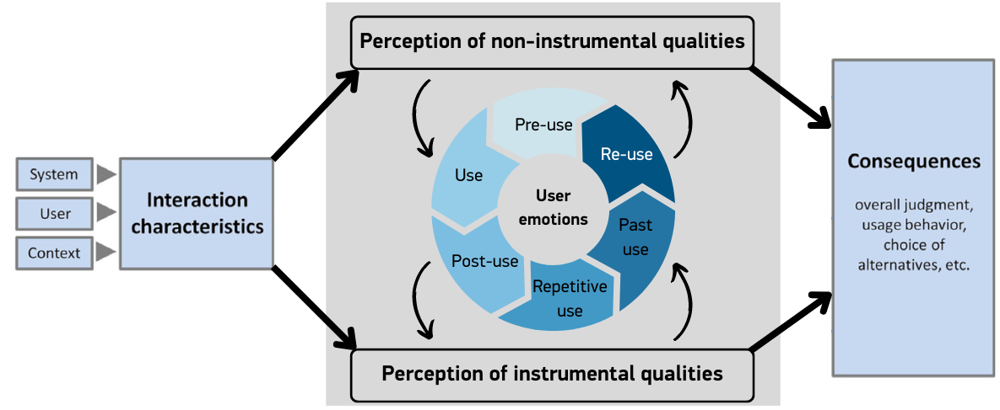

Artefacts
The artefacts I have created during the Module 6 (Software Engineering Project Management) of MSc Computer Science program.
Collaborative Discussion 1 (Initial Post): Project Failures Study (Unit 1)
Overview:
Instructions: Please read the Itkonen et al. (2014) paper and then answer the following questions:
- What do you believe are the three most common reasons for project failure?
- Give two examples of failures that support your choices (there are several examples in the lecturecast).
Here is my initial post:
In my opinion, the three most common reasons for project failure are:
- Lack of testing: As Itkonen et al. (2014) pointed out in their paper, lack of proper testing procedures is a common problem regardless of the type of the project or failure in question. Testing is commonly seen as a burden and the development teams incline to refrain from allocating it sufficient time especially when there is a pressure from the management in terms of avoiding unnecessary costs (both in terms of money and time). A mitigation to this problem would be to adopt test-centric approaches like Test-Driven Development.
- Inaccurate estimation and analysis: Inaccurate estimation of time needed to deliver the project or the project budget leads to unrealistic expectations and a potential deadlock in which more budget is needed whereas the contracting company is reluctant to provide it. Sometimes, the opposite may be true as well: Specifications change after signing the contract and it leads to a budget that is higher than expected. The budget conflicts are arguably one of the most common reasons of project failure.
- Inadequate skills and incompetency: Especially in today’s world where outsourcing even the smallest projects is commonplace, it is quite possible that the contractor company may lack the talent needed to meet the requirements, even more so considering today’s highly competitive market.
F-35 Lightning II project suffered from many different types of failure throughout years, making it the costliest defence project to date (Gregg, 2021). At the beginning of the project, F35 was projected to replace some certain types of aircraft in US Army’s inventory, however, over time the specifications changed, and it was decided that, by making “small” modification to the project in hand, a broader range of aircrafts could be replaced by F35 (Why Projects Fail, 2023). However, this led to an increase of the project budget to $1.7T (Bunch, 2023). Besides, the project was delayed significantly (Losey, 2023) due to design and software flaws which could have been avoided by a robust development methodology and proper testing (Grazier, 2021). Here, referring to categories of common failures mentioned in the lecture cast, we can see that this failure touches many of them, including Market and Strategy, Organization and Planning, Estimation and Analysis, Quality and Complexity.
We can see a similar scenario playing out in London Stock Exchange’s (LSE) Taurus project (Hargreaves, 2020). LSE continued adding new features to the project specification which resulted in a much more complex project than the way it was projected at the beginning. In the end, unlike F35 project, the project was abandoned altogether (McRae, 1993) and the £500-worth of investments (Why Projects Fail, 2022) by the stakeholders and the exchange itself was wasted.
Note: Refer to the bottom of the page for references.
Seminar Preparation: Requirements Gathering (Unit 2)
Overview:
Instructions: Read the Behaviour Driven Development (2020) pages and then use the Gherkin language to create a Gherkin sequence that addresses ONE of the following examples:
- Using a new coffee making machine.
- Interfacing with a new SatNav system.
- Using a computer running the Linux operating system.
- Getting familiar with a new vehicle.
- Creating a batch or shell script.
Your response should consist of at least three scenarios describing different roles such as administrator, user, driver and so on.
My response:
I chose the "Getting familiar with a new vehicle" scenario for the exercise and came up with four scenarios and expressed them in Gherkin language. During the seminar, I also had the opportunity to present my scenarios to the tutor and gather his feedback.
You can see my scenarios in this presentation.
e-Portfolio Activity: Data Structures Reflection (Unit 3)
Overview:
Instructions: Read Dicheva & Hodge (2018). Think about an online system which you use on a daily basis. Consider how it might operate at the back-end using data structures. This will inform our discussion during next week’s seminar.
My answer:
The old version of our company portal used to allow us to go back to the previous page we viewed by clicking on “Previous” button (much like a browser’s previous & next buttons). I assume that the pages that the user viewed was saved in a stack (like it was discussed by Dicheva & Hodge (2018)) so that when the user hits “previous” button, the page at the top of the stack is retrieved and dequeued (just like pop() method in python) and it goes on like this until the stack is empty.
Seminar Preparation: Estimating Tools and Risk Assessment - Activity 1 (Unit 4)
Overview:
Instructions: Review the NIST Privacy tools. How do these fit with the risk assessment methods and tools described in last week’s lecturecast?
Create a python program that implements one of the estimation methods covered in the lecturecast. You can use the Jupyter Notebook workspace in Codio and save your work to your GitHub repository.
My answer:
In my opinion, the NIST privacy tools, namely, NIST Privacy Framework, NIST Internal Report 8062 and NIST Privacy Risk Assessment Methodology are supplementary tools to the regular risk assessment methods and tools. The methods and tools like OCTAVE or Open FAIR are more oriented towards cybersecurity and information security. These tools provide a guidance so that the security practitioners can also address to privacy concerns. For example, as it is stated in the executive summary of NIST Privacy Framework document, there are some privacy risks that arise by means unrelated to cybersecurity incidents, for example, by non-compliance to GDPR.
I created a python application which allows the user to estimate the project cost by using basic COCOMO and function points methods. You can see the source code here.
Seminar Preparation: Estimating Tools and Risk Assessment - Activity 2 (Unit 4)
Overview:
Instructions: read the articles by Verner et al (2014) and Anton & Nucu (2020) and then answer the following questions:
- What are the main risks that the authors identify?
- Which of the frameworks discussed in the Unit 3 lecturecast would you use to capture and categorise the risks?
- Add a risk and a suggested mitigation to the module forum.
My answers:
1. According to Anton & Nucu (2020), the main risks involved the Software Development projects are:
- Poor outsourcing practices which include the vendor’s lack of technical and project management skills.
- Cultural and language barriers in case of distributed teams.
- Lack of communication between the vendor and the company or within the development team (vendor) itself.
- Inaccurate requirement gathering practices, especially the lack of participation in the requirement gathering sessions by the clients.
2. I do not think a regular risk assessment framework like Open FAIR or OCTAVE would be appropriate to identify the risks to the software development projects. Because these frameworks are developed to capture the cyber security or information security risks, however, we are talking about risks to software development projects here.
3. A risk and a mitigation:
Risk: Poor outsourcing practices which include the vendor’s lack of technical and project management skills.
Mitigation: Choosing a vendor with Software Project Improvement (SPI) certificate will improve the chances of project success. Moreover, in order to ensure that the vendor has the required skills, a company can have a pilot project with the potential vendor before entering into contract.
Collaborative Discussion 2 (Initial Post): Factors Affecting User Experience (Unit 5)
Overview:
Instructions: Human emotions can affect the user experience, a fact which contributes to the complexity of user satisfaction with a product. Further complicating the process is the fact that user emotions on the first use of a product are likely to be different to their emotions once they become more experienced.
Read Minge & Thuring (2018). Based on the change in human emotion over time, might you adapt Figure 1 in their paper in any way?
Here is my initial post:
As suggested by Minge & Thuring (2018), the perception of instrumental and non-instrumental qualities of a system is heavily affected by the user's emotions. Moreover, human emotions tend to change over the course of the user's interaction with the system. The distinctive phases of the user's interaction with the system which impact the user's emotions towards it may be broken down as pre-use, use, post-use, repetitive, past use and re-use; as indicated by the authors.
If I would redesign the Components of User Experience (CUE) model in order to emphasize the impact of user emotions that are changing over time, I would add a circular component depicting the aforementioned six phases. One may think that the circular flow should end in the re-use phase in which the user uses the system again after some time. However, I believe that if the user doesn't use the system for a considerable amount of time, it is likely that he may experience feelings that are similar to the first-time use, hence he may return to the pre-use phase. Therefore, I think a continuous circular model is valid here.

Revised Components of User Experience (CUE) Model
Note: Refer to the bottom of the page for references.
Codio Activity - pytest (Unit 6)
Overview:
Instructions: Copy the code given in wallet.py and test_wallet.py and run pylint. See that the tests pass. Amend the code so that the tests fail.
My answer:
A clumsy programmer mixes up the += with -= and > with < so he makes some mistakes. After running the tests, he also finds out that he added "5" to the initial amount supposedly because his cat walked on his keyboard!
See the code here.
Assignment 1: Development Team Project - Project Report (Unit 6)
Overview:
Instructions:
You are provided with a transcript between two (hypothetical) characters in chapter 2 of the case study and Appendix 1 and 2. You are required to analyse the transcript and extract the initial requirements of both stakeholders and critique them with respect to assumptions and gaps in what is provided.
Based on the information supplied in the provided case study, your tasks are as follows.
You (your group) are required to produce a proposal that details a suitable development methodology (e.g. waterfall or agile based) for the system under consideration, supported by a discussion that justifies the choice of methodology. You should also produce a set of requirements (derived from the supplied discussion transcript), a development plan with suitable milestones, proposed deliverables and an estimated cost of the system (based on the supplied BOMs and the miscellaneous information provided below).
Our response:
As a team (a team of 5) we analyzed the transcript, hardware BOM and software BOM. We started by extracting the requirements, then came up with a project plan.
You can see check out the project report here along with the Gantt chart.
Collaborative Discussion 2 (Summary Post): Factors Affecting User Experience (Unit 7):
Overview:
Instructions: provide a summary post based on your initial post, the feedback from your peers and the content of the three units.
My summary post:
According to Minge & Thuring (2018), while visual aesthetics influence the perceived usability of a system, the usability of the system gains prominence and impacts the perceived visual attractiveness at later stages. As shown by the research by the authors, the user's emotions and emotional responses play an important role as the changing emotions impact the perception of non-instrumental and instrumental qualities and in turn, they are also impacted by the perceptions. In the research, only the short-term impact of the emotional responses and the perceptions of visual aesthetics and usability were analyzed. When thinking about the longer term, I thought it was appropriate to adapt the diagram as below:
Revised Components of User Experience (CUE) Model
Even though Michael suggested that the perceptions should be at the centre of the circular flow, as I pointed out in my reply, I think that the emotions are more volatile and are more inclined to change over time. That's why, from my point of view, it is more accurate to emphasize the changing emotions over time with bidirectional arrows to the perception of instrumental and non-instrumental qualities, depicting the reciprocal influence and interaction between the emotions and the perception. And as I have also mentioned in my reply, the circular flow and the bidirectional arrows also indicate the changing perceptions in a circular fashion.
Note: Refer to the bottom of the page for references.
e-Portfolio Activity: Handling the emotional reactions of customers (Unit 7)
Overview:
Instructions: As a Project Manager, what might be your response to manage the emotional reactions of a customer? You should use at least three academic papers to support your response and write a minimum of 300 words as your response.
My answer:
I believe that managing the emotional reactions of a customer requires the management of the customer’s expectations and from my point of view, this is one of the most important and arguably the most challenging aspects of the project manager’s job. In a software engineering project, the customer should not be seen and treated like an end user of a retail product, because the customer is the most important stakeholder and sometimes the driver of the project. Therefore, keeping many factors like the triple constraints (Dobson, 2004) in mind, the project manager should strive to keep the customer’s expectations realistic. This way, the emotional responses of the customer can be managed easily.
This requires the customer to play an active role in the project, as opposed to a passive role in more traditional approaches. However, this doesn’t necessarily mean that the customer should participate in the meetings or the process physically. This is usually not possible because of many reasons, most importantly, the customer’s lack of technical background and busy agenda (i.e., he/she has to run his/her business after all). So, how can a busy customer without technical knowledge play an active role in the development of a project? Many solutions have been developed to address this issue throughout the years. For example, in agile development methodology, the Three Amigos meetings (Dinwiddie, 2011) help the development team to align with the customer expectations and also provide some feedback to the customer about the divergence from the original requirements so that the customer can have more realistic expectations. In these meetings, the business analyst or the product owner represents the customer. Extreme Programming (XP) also adopts a similar approach by incorporating a customer representative into the “Whole XP Team” (Beck & Andres, 2005). Moreover, Behavior-Driven Development (Lawrence & Rayner, 2019) methodology helps non-technical stakeholders to keep track of the project as well as make meaningful contributions via several practices and tools, the most important of them being the Gherkin specifications.
It may also help to provide a prototype of a system to the customer as soon as possible as envisioned by some SDLC models like Rapid Application Development (Martin, 1991). As suggested by Minge & Thuring (2018), visual aesthetics play an important role in the perceived usability of the system and over time, the usability of the system gains importance. Providing an early preview may help the customer to get the feel of the system and display more moderate emotional responses in the later stages of the project.
To summarize, in order to manage the emotional reactions of a customer in a more efficient manner, I would apply a mix of the costumer-centric aspects of the SDLC models like Behavior-Driven Development or Extreme Programming.
Note: Refer to the bottom of the page for references.
Seminar Preparation: Data Structures (Unit 8)
Overview:
Instructions: You will now become familiar with data structures, which are approaches to organise, store and manage electronic data. To do this, visit python.org, and any other relevant sources of information that you may find useful to support this task:
- Select at least two different data structures to hold the data associated with the list of functional and non-functional requirements that you defined for Unit 2 seminar preparations (requirements gathering).
- Justify your data structure choices.
- Select at least one academic paper, which might be similar to the work of Abeykoon et al. (2020).
- Use your sourced information to support your data structure choices.
My answer:
Feature: Starting the vehicle
Scenario: The vehicle’s engine should start once it is started by the driver.
Given the vehicle’s engine is not running
And it is not in a faulty state
When the driver starts the engine
Then the vehicle’s engine should start running
For this Gherkin requirement, I’d choose to use a Python dictionary. Since Python dictionaries are key:value pairs, it is the appropriate choice to store different types of data and easily access the dictionary items by using the unique keys. For instance, for the example above, I’d design the dictionary like this (I added speed and users to illustrate the ability of storing various types of data or nested data structures):
car_data = {“engine_state”: False, “failure”: False, “speed”: 0, “users”: {“Etkin”, “John”, “Jane”}}
In a similar fashion, Crump (2014) extracts raw OCR output from a scanned text and classifies and stores the data in a Python dictionary, since the data extracted is of various types (page number, date, text, etc.). Apparently, just like the car data we have above, when it comes to storing different types of data in one place, a Python dictionary is the best choice.
Feature: Vehicle entertainment system
Scenario: The vehicle’s entertainment system (ES) should play music.
Given the vehicle’s ES is installed
And it is configured correctly
When the driver/passenger turns it on
And selects the multimedia type
Then the vehicle’s ES should start playing music
While the various configurations of the entertainment system (ES) may be stored in a dictionary, Python lists in the form of stacks may come in handy when the user wants to go back in the playing history. For example, we may have a Python list called “history” where we store the tracks played by the ES.
history = [“Show Must Go On”, “Bohemian Rhapsody”]
When a new track is played, it can be added to the end of the list:
history.append(“We Will Rock You”)
Then, we may have:
history = [“Show Must Go On”, “Bohemian Rhapsody”, “We Will Rock You”]
When the user wants to go back in history, he may press the “Previous” button on his/her ES and under the hood, this may happen:
previous = history.pop()
pop() method removes the last element of the list (when used without a parameter). Here, we assign the last element to a variable so that it can be played by the ES. This way, user can go back in history until the list is empty.
In their paper, Lopiccolo, et al. (2021) demonstrates how DNA-based memory systems can be formalized and implemented using Python lists as stacks: Received signals are added to the end of the DNA polymer (hence, append()) and then the added signals can be retrieved in FILO order (hence, pop()).
Note: Refer to the bottom of the page for references.
Lecturecast Questions: Scope creep (Unit 9)
1. What is scope creep?
Scope creep occurs when the score of the project grows larger throughout the duration of the project. Due to this growth, a lot of features are included that were never intended to be a part of the project.
2. What aspects of a project are dependent on scope creep?
Cost and time are directly dependent on the scope creep, as a larger scope requires more money and a larger project will take more time to be completed.
3. How to balance the competing requirements when scope creep occurs?
In this case, the project manager (PM) has to refer back to the original scope of the project and communicate with the project owner. PM should manage the expectations of the business/client.
4. How do you stop scope creep?
To stop scope creep, PM should create a vision and scope document at the beginning of the project and seek the approval of the client. Moving forward, every change request should be evaluated against this document and communicated with the client/project owner. They should also be discussed within the context of the triple constraint. Vision and scope document and triple constraint are very valuable tools to manage the expectations of the client as well as to stop scope creep.
ePortfolio Activity: Reflection on Software Quality (Unit 10)
Instructions: Review the article by McCall et al. (1977). Select a timelier academic article on software quality. Discuss, in 300 words, the major differences in relation to software quality between the two articles.
My answer:
Since Software-as-a-Service (SaaS) is all the rage nowadays, I selected a paper discussing the factors that affect SaaS quality and compared the identified factors against the McCall model (McCall et al., 1977) to determine if the model is still valid in the field of SaaS or if new factors should be introduced in the light of latest technological developments in SaaS.
In their paper discussing the factors influencing the quality of SaaS, Basiran & Yusof (2021) identify the five SaaS quality factors:
- Assurance: The ability of the service provider to offer training on the product and transfer knowledge by answering the users’ questions.
- Empathy: The attention service providers pay to their users' problems.
- Responsiveness: How quickly the service providers respond to users’ requests, problems, or questions.
- Reliability: The degree to which the services offered are available when required.
- Communication: The effectiveness of the interaction between the service provider and users.
When considering the software quality factors identified by McCall, it can be seen that the quality factors related to the product operation (Correctness, Efficiency, Integrity, Reliability and Usability) are covered by the factors above, even though it sometimes requires a broad interpretation of them.
When it comes to the product revision factors (Maintainability, Flexibility, Testability), I’d argue that reliability covers these to some extent, but not entirely. These may have been left out because these factors do not contribute much to the quality perceived by the users, despite their importance in producing robust software.
Finally, from my point of view, the most important shortcoming of the SaaS factors listed above is that they do not factor in the importance of the product transition factors (Portability, Re-usability, and Interoperability). Even though vendor lock-in in SaaS is not as big a problem as it is in IaaS, some users when users want to migrate from one platform to another, may face serious challenges. That’s why, these factors (especially portability) should definitely be part of the quality factors.
Note: Refer to the bottom of the page for references.
On the other hand, the authors suggest that the effectiveness of communication contributes significantly to the quality of the product. Moreover, they argue that when the software providers are willing to provide training and transfer knowledge, the users are able to use the product more efficiently, increasing the perceived quality. I believe that, given the nature of modern software development projects and in light of modern technologies, these two should be considered among the factors that determine the overall quality of software.
Codio Activity: Using Linters to Achieve Python Code Quality (Unit 10)
Instructions: Run the code given against a variety of linters to test the code quality:
- pylint
- pyflakes
- pycodestyle
- pydocstyle
Compare the effectiveness of each tool in defining and identifying code quality. What can you conclude about the effectiveness of each approach?
My answer:
Pycodestyle and Pydocstyle are linters that are developed for specific purposes: Pycodestyle checks the code against style conventions in PEP 8 and Pydocstyle checks the code against doctoring conventions. So, one should not expect to identify the code smells or logical errors using these tools. On the other hand, with Pyflakes one can detect various errors in the code, but it doesn’t check the code against styling conventions. Finally, Pylint looks like a comprehensive solution which helps the developers to detect logical errors, code smells as well as discrepancies against Python styling conventions.
References:
Abeykoon et al. (2020) Data Engineering for HPC with Python. 2020 IEEE/ACM 9th Workshop on Python for High-Performance and Scientific Computing (PyHPC). Virtual Conference, 13 November. 13-21. DOI: 10.1109/PyHPC51966.2020.00007
Anton, S.G. & Nucu, A.E.A. (2020) Enterprise Risk Management: A Literature Review and Agenda for Future Research. Journal of Risk and Financial Management 13(11). DOI: https://doi.org/10.3390/jrfm13110281
Basiran, N.H., & Yusof, M.M. (2021). Measuring factors influencing quality of software-as-a-service. Information Development. DOI: https://doi-org.uniessexlib.idm.oclc.org/10.1177/02666669211056368
Beck, K. & Andres, C. (2005) Extreme Programming Explained. 2nd ed. Boston: Addison-Wesley.
Bunch, V. (2021) Will U.S. learn from a $1.7 trillion goof that would have paid for Biden’s infrastructure plan? Available from: https://www.inquirer.com/columnists/attytood/f-35-waste-pentagon-trillion-biden-infrastructure-20210401.html [Accessed 7 May 2023].
Crump, J. (2014) Generating an Ordered Data Set from an OCR Text File. Programming Historian 2014(3). DOI: https://doi.org/10.46430/phen0036
Dicheva, D. & Hodge, A. (2018) Active Learning through Game Play in a Data Structures Course. 834-839. DOI: 10.1145/3159450.3159605
Dinwiddie, G. (2011) Three Amigos: All for One and One for All. Better Software. 2011(06): 24-27.
Dobson, M. S. (2004) The Triple Constraints in Project Management. Oakland: Berrett-Koehler Publishers.
Engel, J., Jones, R. & Rice, B. (2020) Behavior Driven Development. Available from: https://behave.readthedocs.io/en/stable/philosophy.html [Accessed 8 May 2023].
Grazier, D. (2021) Is the F-35 Program at a Crossroads? Available from: https://www.pogo.org/analysis/2021/02/is-the-f-35-program-at-a-crossroads [Accessed 7 May 2023].
Gregg, A. (2021) Powerful lawmaker calls F-35 fighter jet a ‘rathole,’ suggests Pentagon should cut its losses. Available from: https://www.washingtonpost.com/business/2021/03/05/adam-smith-f35/ [Accessed 7 May 2023].
Hargreaves, T. (2020) London Stock Exchange — A Case Study. Available from: https://medium.com/@sidetracking/london-stock-exchange-a-case-study-e29bf3e54dbc [Accessed 7 May 2023].
Itkonen, J., Lassenius, C., Lehtinen, T.O.A., Mäntylä, M.V., Vanhanen, J., (2014) Perceived causes of software project failures – An analysis of their relationships. Information and Software Technology. 56(6): 623-643. DOI: https://doi.org/10.1016/j.infsof.2014.01.015
Lawrence, R. & Rayner, P. (2019) Behavior-Driven Development with Cucumber: Better Collaboration for Better Software. Boston: Addison-Wesley.
Lopiccolo, et al. (2021) A last-in first-out stack data structure implemented in DNA. Nature Communications 12(1): 4861. DOI: https://doi.org/10.1038/s41467-021-25023-6
Losey, S. (2023) DoD delays key F-35 tests, lowering chance of 2023 production decision. Available from: https://www.defensenews.com/air/2023/01/24/dod-delays-key-f-35-tests-lowering-chance-of-2023-production-decision/ [Accessed 7 May 2023].
Martin, J. (1991) Rapid Application Development. New York: Macmillan.
McCall, J.A., Richards, P.K. & Walters, G.F. (1977) Factors in Software Quality: Concept and Definitions of Software Quality. Technical Report RADC-TR-77-369, Rome Air Development Center, New York.
McRae, H. (1993) Comment: Taking the bull by the horns. Available from: https://www.independent.co.uk/news/business/comment-taking-the-bull-by-the-horns-1497198.html [Accessed 7 May 2023].
Minge, M. & Thuring, M. (2018) Hedonic and Pragmatic Effects at Early Stages of User Experience. International Journal of Human-Computer Studies 109: 13-25.
Verner, J.M., Brereton, O.P., Kitchenham, B.A., Turner, M. & Niazi, M. (2014) Risks and risk mitigation in global software development: A tertiary study. Information and Software Technology 56(1): 54-78. DOI: https://doi-org.uniessexlib.idm.oclc.org/10.1016/j.infsof.2013.06.005
Why Projects Fail Blog (2023) F-35 Lightning II. Available from: https://calleam.com/WTPF/?p=9311 [Accessed 7 May 2023].
Why Projects Fail Blog (2022) London Stock Exchange – Taurus. Available from: https://calleam.com/WTPF/?p=3474 [Accessed 7 May 2023].